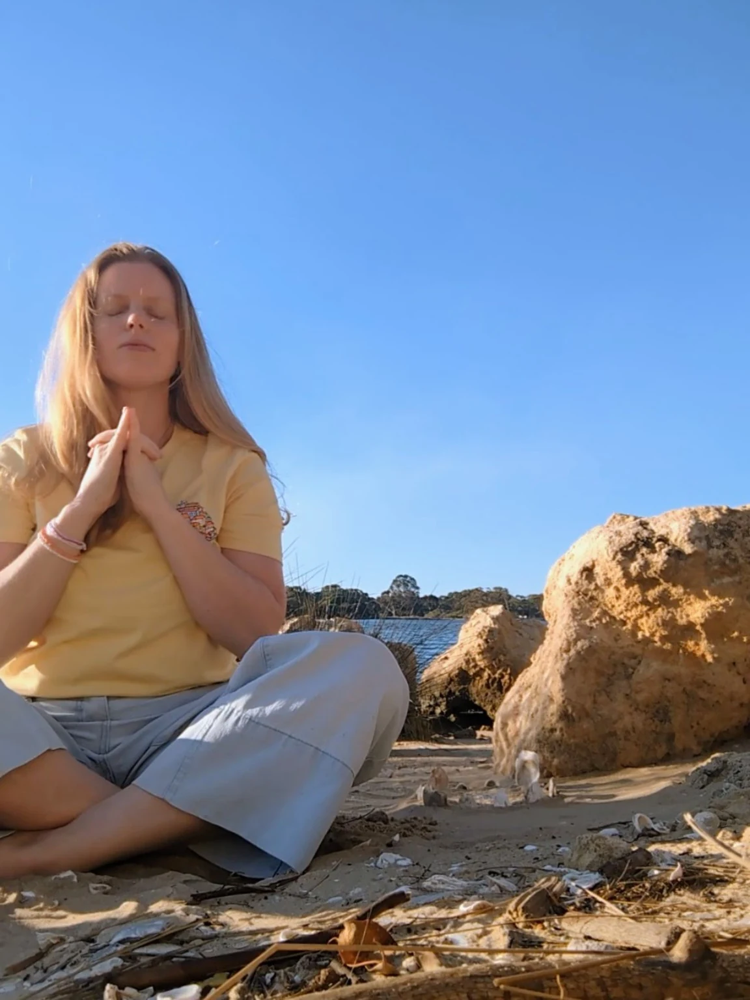

Pearl Sequence Sessions
Speak first.
Gather the foundations
for your website.
Five individual sessions exploring your story, gifts, relationships and offering—with something concrete to take to a website designer.
A glimpse at each sessionThe approach
Why I use
Speak First.

Speak First is my way of beginning with conversation. I ask questions, listen and help you explore your experience before we shape it into writing.
By embodied voice, I mean speaking with attention to your body as well as your thoughts: noticing your breath, allowing pauses, and recognising when a phrase feels natural, strained or incomplete. There is room to slow down, change your mind and find another way to say something.
I use this approach because a conversation can give us concrete examples, familiar expressions and details that are difficult to reach when trying to write a polished introduction. You can explain what actually happens in your work, hear your own words and notice what matters to you.
Speaking first can ease the pressure of the blank page. It also gives us source material in your own language, which we can return to as the writing develops.
With your agreement, the sessions are recorded and transcribed. I use AI tools to help organise the material into notes and drafts, which I review. We agree how your recordings will be used before beginning, and you decide what is suitable to share publicly.
The five conversations
Your story.
Then the four Pearl spheres.
Your own Gene Keys and lines provide prompts for contemplation. Your lived experience and practical choices shape the material we develop.
There is space between sessions to stay with the questions—and if an insight arrives on a walk or in between our calls, you are welcome to send a quick voice note or reflection so we can weave it in. I gather notes and drafts alongside our conversations, and we agree when you would like to see them.
We begin with what brought you here: how you encountered the Gene Keys, the other practices and modalities you work with, and the experiences that have shaped your offering. We explore what you already do, or are preparing to begin, and what you need from a website.
Questions might include: How did you come to this work? What happens when someone works with you? What do you find difficult to explain?
- In your Sourcebook · Source Record
- your origin story, natural phrases, relevant experience and training, a first biography draft, and a note of your current offering and website needs.
- Possible website uses
- About page, short introduction, practitioner background.
We contemplate your Vocation and explore how your gifts find expression in the work you do. We bring this back to real examples: what people ask you for, what you offer during a session, and the experience and skills you draw on.
Questions might include: What do you bring to this work? What are people seeking when they come to you? What can you responsibly offer them?
- In your Sourcebook · Resonance Record
- reflections on your gifts and service, standout “pearl moments” in your own words, a plain-language description of your offering, and notes on what it includes and its boundaries.
- Possible website uses
- Services, what a session involves, your approach.
We contemplate your Culture and explore the relationships in which your work takes place. This includes the people you work with, the communities you belong to, the support you need and the settings in which you prefer to offer your work.
Questions might include: Who do you feel equipped to support? What helps a working relationship feel right? How do you prefer to work with people?
- In your Sourcebook · Community Canvas
- a working description of who your offering is for, your preferred ways of working, and the qualities and boundaries that matter in your client relationships.
- Possible website uses
- Who I work with, session format, what to expect, practical FAQs.
We contemplate your Brand and explore how your work is expressed and recognised. We listen for language that feels natural to you and consider what someone needs to understand when they first encounter your offering.
Questions might include: How would you explain your work to someone new? What do you want your words and images to communicate? Which descriptions feel accurate?
- In your Sourcebook · Brand Signal
- a draft introduction, key phrases, a short description of your work, and initial preferences for tone, atmosphere, imagery and visual style.
- Possible website uses
- Opening headline, homepage introduction, consistent language and a starting direction for the design.
We contemplate your Pearl and make space to recognise what has emerged across the five sessions. We explore what prosperity and enough mean in your life, and what offering your work could look like in a way you can sustain.
Questions might include: What feels clearer now? What can become simpler? What are you ready to offer, and what still needs time?
- In your Sourcebook · Prosperity Proposition & Brief
- a closing reflection, your current priorities, and a working website brief that brings the earlier drafts together. It records the sections you may need, outstanding decisions and the route from first enquiry to working with you.
- Possible website uses
- Overall page structure, your invitation to get in touch or book, and the requirements for booking, payment and calendar connections.
Our final session is also a celebration of what has emerged and the next step you choose to take.

Something useful to take with you
Your Sourcebook.
Your Sourcebook brings your reflections, story and website foundations together in one place.
- Recordings, transcripts and session summaries
- Your story, selected phrases, pearl moments and reflections
- First drafts for your website
- A working brief and the decisions still to make
Keep it for yourself, take it to another designer, or continue with me through Pearlsites.
Your personal reflections remain yours. Only material you choose belongs on your website. These are first drafts and foundations; the image represents the collection of materials.
Relevant website material comes in full sentences and dot points, alongside a working brief and the decisions still to make. The collection can draw from the whole journey, so a later conversation may refine an earlier draft.
A few practical things
Room for the personal.
Useful for the practical.
Gene Keys Guides, wisdom keepers, counsellors and practitioners working across different therapies and modalities. It can also support someone ready to begin a small service offering.
You are already doing the work, or have skills you are ready to offer. You would like help explaining what you do, who it is for and how you work.
You can arrive with scattered notes, an existing website or very little written down. We begin with your experience and what you are ready to offer.
With your agreement, our conversations are recorded and transcribed. I use AI tools to help organise notes and drafts, which I review. We agree how your material will be used before beginning. You choose what can become public copy.
The five sessions give you your Sourcebook and supporting material. By agreement, we can also explore a basic mock-up of how the material might become a website. A full website build is a separately agreed Pearlsites package.
We discuss your offering and familiarity with the Gene Keys, and agree the session length, rhythm, format and fee, how you receive your materials and when you would like to review them. These sessions are my own guided offering; access to an official Gene Keys course is not included.
Yes. Get Bookable is a focused two-hour package for services you are ready to offer. We shape a simple bio and service descriptions, set up booking types, and connect your calendar, payments and confirmation email through Bio Sites or TidyCal, with a link you can share.
Personal guidance
You can also come for an individual conversation.
If your focus is personal contemplation rather than developing website material, Gene Keys contemplation and guidance sessions offer another place to begin. The booking page shows the current options.
View bookingsWhat are you ready to put into words?
You can begin with a question, a few scattered notes, or a sense that it is time for your work to have a website. We agree the format, timing and fee before working together.
View bookings